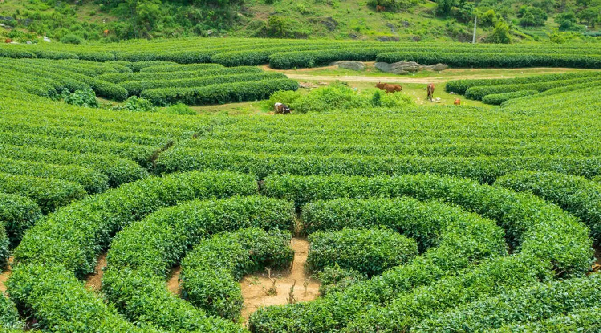

- TRANG CHỦ
- THỜI ĐIỂM NÊN ĐI
- PHƯƠNG TIỆN ĐI LẠI
- CHI PHÍ
>
Giới Thiệu Du Lịch Mộc Châu-Sơn La
Mộc Châu là một huyện của tỉnh Sơn La, huyện gồm có hai thị trấn: Mộc Châu và nông trường Mộc Châu. Mộc Châu là cao nguyên rộng
lớn và xinh đẹp nhất miền núi phía bắc, có khí hậu ôn đới gió mùa, các điểm du lịch nổi tiếng như: Hang Dơi, rừng
thông Mộc Châu, thác Thái Hưng... và không thể thiếu các đồi chè, đồng cỏ ở thị trấn nông trường Mộc Châu. Mỗi mùa, Mộc Châu lại
khoác trên mình những chiếc áo khác nhau. Khi thì là những bức ảnh đồng cỏ xanh trải dài vô tận, những cánh đồng cải trắng ngút
tầm mắt, lúc thì là những dải hồng của sắc đào, những tấm áo trắng tinh khôi căng tràn nhựa sống của hoa mận… Trước tết và sau
tết âm lịch (khoảng cuối tháng 1, đến hết tháng 2 dương lịch): hoa đào, hoa mận nở trắng trong mọi góc hình Mộc Châu.

Từ tháng 10 – 12 những bông dã quỳ, hoa cải bắt đầu nở, những bông cải trắng bạt ngàn, phủ trắng bao quả đồi. những đồi cải
trắng trải dài như tấm thảm nhìn ngút tầm mắt, lúc này khắp các bản làng ở Mộc Châu được bao phủ bởi một màu trắng tinh khôi của hoa cải.
Những địa điểm có hoa cải đẹp nhất là khu phía sau rừng thông Bản Áng, bản Pa Phách, khu vực Ngũ Động Bản Ôn, bản Cóc…

Tháng 4 - tháng 8, Mùa mận chín và khí hậu mát mẻ.Khoảng thời gian này các tỉnh đồng bằng bước vào mùa hè oi bức trong khi đó
Mộc Châu lại mát mẻ và trong lành, nên đây là điểm trú nóng lý tưởng cho bạn. Thời điểm này cũng là khi những vườn mận có quả
chín, bạn có thể tham quan và hái mận với người dân.Ngoài ra vào khoảng thời gian này, nước từ đầu nguồn về khiến cho Thác Dải
Yếm có nhiều nước, dòng thác rất mạnh, lúc này là thời điểm thác đẹp nhất, bạn đừng bỏ lỡ điểm du lịch rất đẹp này.

Địa Điểm Đồi chè trái tim
Mộc Châu có nhiều đồi chè hình trái tim cho bạn khám phá. Đồi chè Đài Loan (gần nhất cách thị trấn Mộc Châu khoảng 10 km),
đồi chè Tân Lập 3 và đồi chè Mộc Sương là những điểm thu hút khách du lịch nhất. Nhìn từ trên cao, những khóm chè được
trồng chụm lại thành hình trái tim lãng mạn. Diện tích đồi chè khá rộng khiến bất cứ bức ảnh nào chụp ở đây trông cũng
ngập tràn màu xanh.Mọi du khách đến Mộc Châu đều không bỏ lỡ điểm du lịch này, đến đây du khách được tận mắt ngắm những
sườn đồi rộng lớn được phủ kín bởi những luống chè xanh mướt. Đây cũng là địa điểm chụp hình rất đẹp ở Mộc Châu.

Địa Điểm Thác Dải Yếm
hay còn gọi là thác nước Bản Vặt, thác Nàng, một địa danh gắn liền với lịch sử cư trú rừ rất xa xưa của tộc người Thái
ở vùng đất Mường Sang xưa, Mộc Châu ngày nay. Có thể nói đây là một cảnh quan sinh thái tuyệt đẹp được thiên nhiên ban
tặng cho vùng đất này.
Thác Dải Yếm đẹp nhất vào khoảng từ tháng 5 đến tháng 9, khoảng thời gian đó có nước từ đầu nguồn về, toàn bộ thác cao
100m, rộng 70m được bảo phủ bởi dòng nước từ trên đổ xuống, trắng xóa, nhìn từ xa thác như chốn bồng lai tiên cảnh.